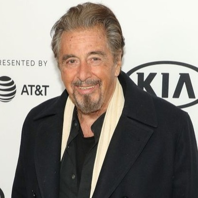

Alfredo James Pacino (/pəˈtʃiːnoʊ/; Italian: [paˈtʃiːno]; born April 25, 1940) is an American actor and filmmaker. In a career spanning over five decades, he has received many awards and nominations, including an Academy Award, two Tony Awards, and two Primetime Emmy Awards. He is one of the few performers to have received the Triple Crown of Acting. He has also been honored with the AFI Life Achievement Award, the Cecil B. DeMille Award, and the National Medal of Arts.
Al Pacino was Born 25 April 1940, in the Bronx, New York. Pacino’s parents (Salvatore and Rose) divorced when he was 2 years old. Al Pacino established himself during one of the film’s greatest actors in the 1970s. Al Pacino has become an iconic figure in the world of American movies. Al Pacino is famous for playing mobsters, including Michael Corleone in The Godfather trilogy, Tony Montana in Scarface, Alphonse “Big Boy” Caprice in Dick Tracy, Carlito Brigante in Carlito’s Way and Benjamin “Lefty” Ruggiero in Donnie Brasco. He has also appeared several times on the other side of the law. Al Pacino was a police officer in Serpico. Then he was a detective in Sea of Love. He starred as a police lieutenant in Heat. He was an army lieutenant colonel in Scent of a Woman. He won the Academy Award for Best Actor for Scent of a Women. He had received seven Oscar nominations before winning. Al Pacino played the role of the Devil in The Devil’s Advocate. Al Pacino has done some awesome films in the 21st century. He has worked with Colin Farrell in The Recruit. He was the main antagonist in Ocean’s Thirteen. He is currently regarded as a legend in the industry. Al Pacino has never married in his life. He had a relationship with Godfather co-star Diane Keaton for a long time. He later dated Beverly D’Angelo from 1996 to 2003. The couple had twins, Anton James and Olivia Rose. He also has an elder daughter Julie Marie with acting coach Julie Marie.